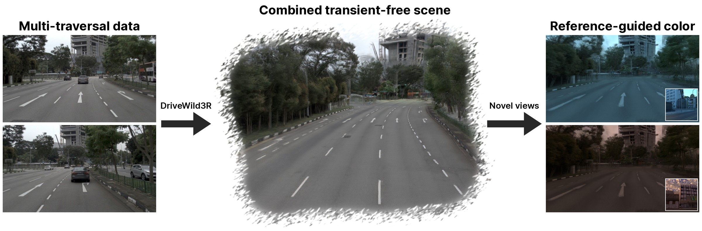
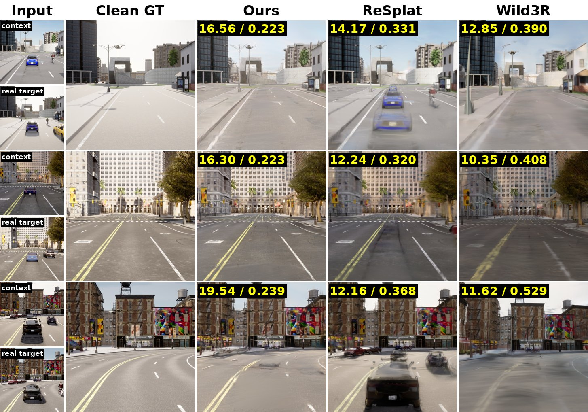
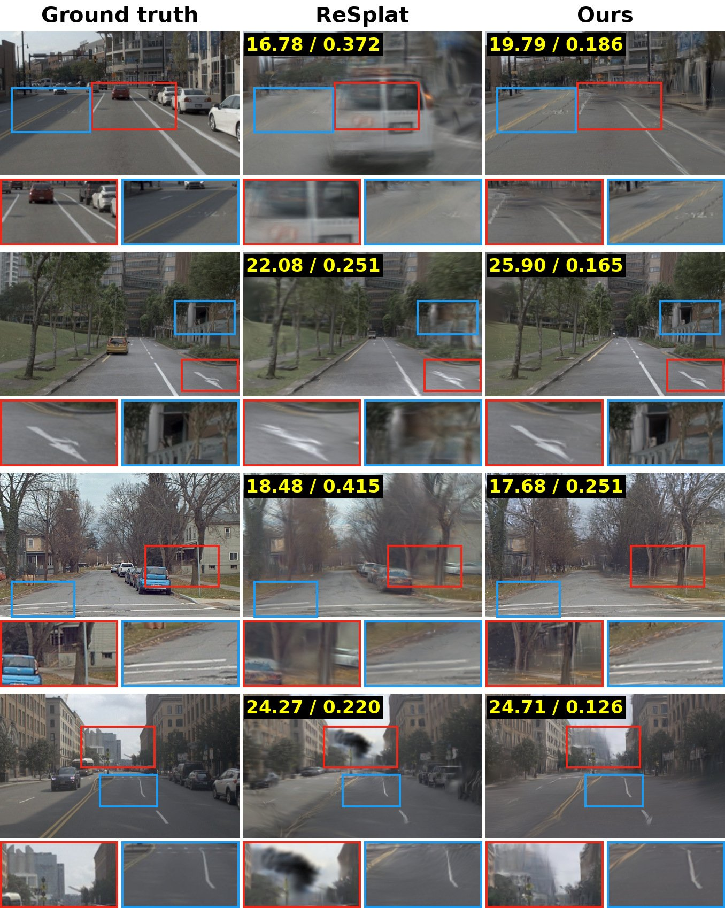
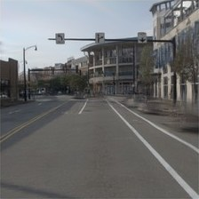
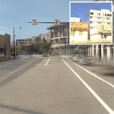
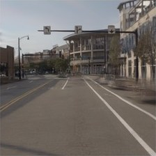

DriveWild3R
Feedforward Transient Removal and Compact Reconstruction of Multi-Traversal Driving Data
1University of California, Berkeley2Mercedes-Benz Research & Development North America3Applied Intuition*Equal contribution

Abstract
One clean street from many drives
Multi-traversal drives observe the same road block under changing traffic and lighting, which gives more observations from more viewpoints than single-traversal data. Existing feedforward 3D Gaussian Splatting methods reconstruct a scene within seconds. On such data, however, they either reproduce the transient vehicles in their input views or bake them into the scene as ghosting artifacts.
We present DriveWild3R, a feedforward framework that reconstructs a shared, transient-free scene with controllable lighting from multi-traversal driving data. We first add to the feedforward predictor a mask head that explicitly identifies transient objects, and an entropy-aware sampling strategy that greatly reduces redundant Gaussians. We then introduce a lighting branch that combines per-image lighting embeddings with per-Gaussian features to transfer the color pattern of any target image. To further improve quality, a two-stage recurrent refiner corrects first the geometry and then the appearance of the initial prediction.
To evaluate reconstruction quality and transient removal directly, we curate DriveWild3R-Bench, a simulated benchmark with traffic-free ground truth under diverse lighting and weather. On it, DriveWild3R beats the strongest feedforward baseline by 3.9 dB PSNR on traffic regions. On the real-world MTGS and Ithaca365 datasets, DriveWild3R achieves the lowest LPIPS and the highest PSNR.
Method
Model overview
Hover over a module to see what it does.
Learned multi-traversal refinement
Render, compare, update: geometry first, then color
Geometry steps compare each context view at its own lighting. Color steps then match the target drive.
Hover over a block to see what it does.
New benchmark
DriveWild3R-Bench
What was behind the car? Real data cannot show it. We render 29 CARLA locations with and without traffic along the same poses, giving traffic-free ground truth in 173 splits from daylight to night and fog.

Transient removal against traffic-free ground truth
Where the traffic removal comes from
PSNR, 200k Gaussians, no lighting reference, same weights in every row.
| Input (50) | Held-out (173) | ||||
|---|---|---|---|---|---|
| Mask | Refiner | Traffic | Static | Traffic | Full |
| Dense, 1.6M | – | 18.24 | 21.68 | 15.29 | 14.51 |
| None | 18.93 | 20.99 | 15.40 | 14.47 | |
| None | ✓ | 18.67 | 22.01 | 15.25 | 14.58 |
| Predicted | 19.51 | 21.04 | 15.53 | 14.51 | |
| Predicted | ✓ | 20.34 | 22.10 | 15.58 | 14.64 |
| Ground truth | 19.59 | 21.05 | 15.54 | 14.51 | |
| Ground truth | ✓ | 20.36 | 22.14 | 15.56 | 14.65 |
Masks move the budget to the static scene and stop the refiner from refitting vehicles. Predicted masks work as well as ground truth.
Real-world results
A new drive through an unseen block
18 MTGS and 30 Ithaca365 splits from unseen road blocks, scored on a drive that contributes no context views.
| MTGS (18) | Ithaca365 (30) | ||||||
|---|---|---|---|---|---|---|---|
| Method | PSNR ↑ | SSIM ↑ | LPIPS ↓ | PSNR ↑ | SSIM ↑ | LPIPS ↓ | Time |

Appearance transfer from arbitrary images
Relight a reconstructed street
Lighting codes from three synthetic images (insets), noon → sunset → night. Only colors change: no new street lights or shadows.

Source lighting

Relit · noonAblations
What each component buys
Refiner (200k, no reference)
| MTGS | Ithaca365 | |||
|---|---|---|---|---|
| Refiner | PSNR | LPIPS | PSNR | LPIPS |
| None | 19.13 | .262 | 18.32 | .277 |
| Frozen, 2 steps | 19.40 | .294 | 18.48 | .320 |
| Frozen, 4 steps | 19.17 | .313 | 18.54 | .337 |
| Fine-tuned, 2 | 19.88 | .235 | 18.65 | .249 |
Frozen, ReSplat's refiner barely helps. Fine-tuned with two steps is best.
Filling sampling holes (MTGS, 100k)
| No refiner | PSNR | SSIM | LPIPS |
|---|---|---|---|
| Discard the rest | 10.51 | .304 | .530 |
| Merge the rest | 18.75 | .636 | .359 |
| Our head | 18.88 | .616 | .274 |
| Dense, 1.6M | 19.18 | .623 | .227 |
Same kept pixels in every row.
Lighting branch (200k)
| MTGS | Ithaca365 | |||
|---|---|---|---|---|
| Lighting | PSNR | LPIPS | PSNR | LPIPS |
| No reference | 19.88 | .235 | 18.65 | .249 |
| + lighting code | 20.71 | .231 | 19.39 | .238 |
| + color steps | 21.26 | .220 | 19.90 | .218 |
Same geometry in every row.
Citation
BibTeX
@misc{koehler2026drivewild3r,
title = {DriveWild3R: Feedforward Transient Removal and Compact Reconstruction of Multi-Traversal Driving Data},
author = {K{\"o}hler, Finn and Peng, Chensheng and Shang, Jerry and Agnihotri, Aaditya and Monninger, Thomas and HERAU, Quentin and Tomizuka, Masayoshi and Zhan, Wei},
year = {2026}
}